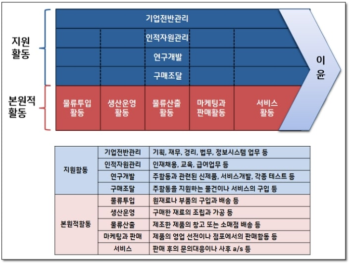
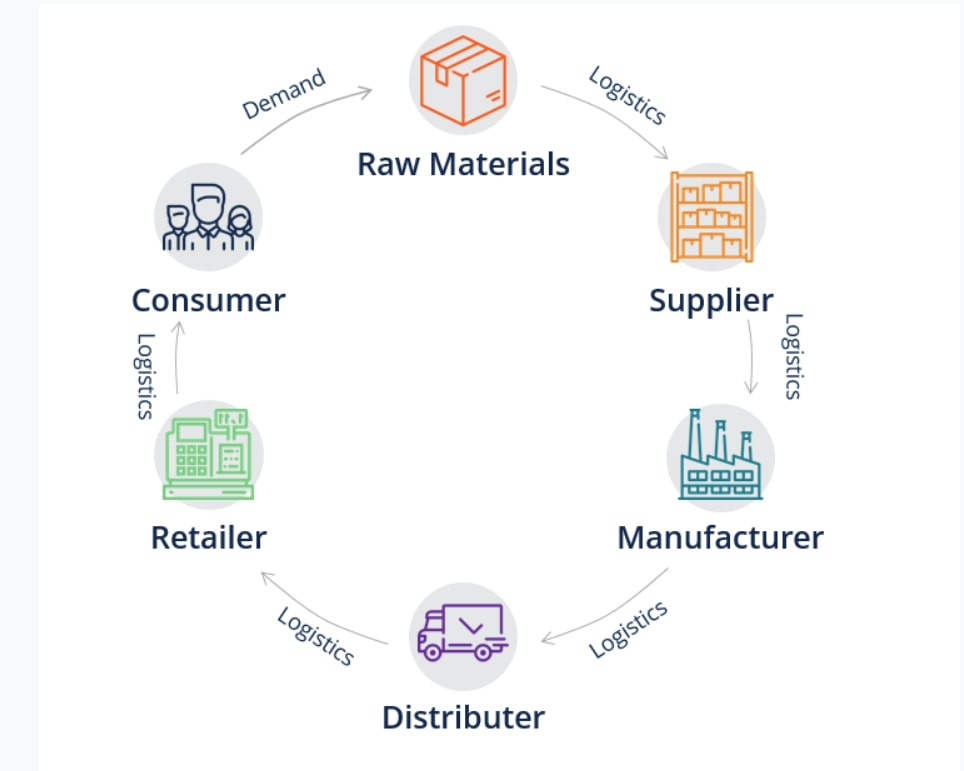

물류의 정보가 원활히 흐르도록하는 시스템, SCM
SCM (Supply Chain Management) – 부품 제공업자로부터 생산자, 배포자, 고객에 이르는 물류의 흐름을 하나의 가치사슬 관점에서 파악하고 필요한 정보가 원활히 흐르도록 지원하는 시스템.
Value Chain - 기업에서 경쟁전략을 세우기 위해, 자신의 경쟁적 지위를 파악하고 이를 향상 시킬 수 있는 지점을 찾기 위해 사용하는 모형이다.
Supply Chain - 공급망은 기업의 공급사슬은 원재료를 획득하고, 이 원재료를 중간재나 최종재로 변환하고, 최종제품을 고객에게 유통시키기 위한 조직 및 비지니스 프로세스의 네트워크다.
Complex system (복잡계) – 완전한 질서나 완전한 무질서를 보이지 않고, 그 사이에 존재하는 계로써, 수많은 요소들로 구성되어 있으며
그들 사이의 비선형 상호작용에 의해 집단성질이 떠오르는 다체 문제이다.
*일이나 비지니스나 제품은 연결되어 있다. 식품&제조&분양
Virtual warehouse - Data Warehouse라고도 불리며, 데이터 웨어하우스는 방대한 조직 내에서 분산 운영되는 각각의 데이터 베이스 관리 시스템들을 효율적으로 통합하여 조정ㆍ관리하며, 효율적인 의사 결정 시스템을 위한 기초를 제공하는 실무적인 활용 방법론이다.